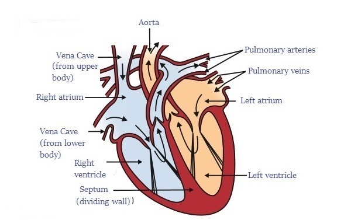

Blood - It is a connective tissue in humans. It transports necessary substances to cells and transports metabolic waste products away from those same cells.
Plasma - It is a yellow-colored fluid. It transports food, carbon dioxide, waste products, etc.
Red Blood Cells - They contain Hemoglobin which transports oxygen.
White Blood Cells - These cells fight against harmful bacteria, viruses, and germs.
Platelets - These help in blood clotting.

Heart - It is a muscular organ. It has two sides separated by a muscular wall. It has four chambers: left atrium, right atrium, left ventricle, and right ventricle.
How the Heart Works - Deoxygenated blood comes from the body to the right atrium, which is then pumped to your lungs by the right ventricle through arteries, where it drops carbon dioxide and carries oxygen. The oxygenated blood comes to the left atrium through veins, which is then pumped to body parts by the left ventricle through the aorta.
Arteries - These carry oxygenated blood from the heart to body parts except pulmonary artery. These are thick and elastic.
Capillaries - The smallest vessels which are one cell thick are called capillaries.
Veins - These carry deoxygenated blood from body parts to the heart except pulmonary vein. These are thin and less elastic.
Lymph - This is also a transporter fluid. The pores present in the walls of capillaries allow some amount of plasma, protein, and blood cells to escape into the intercellular space in the tissue to form lymph.
It is colorless.
Lymph absorbs and transports fat from the intestine.
It drains away the excess tissue metabolism.
Xylem - It transports water and minerals in an upward direction from roots to the highest point of the plant. It only transports upwards and it works on the principle of transpiration.
Phloem - It transports food from leaves to other parts of the plant. It can transport upward and downward and it works on the principle of translocation.